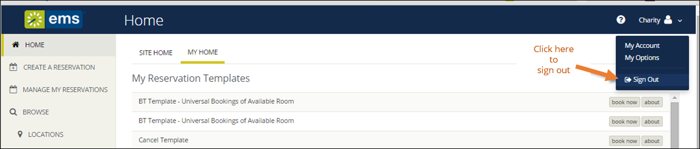

Log In and Out
You can access EMS Web App through any standard Internet browser. This topic provides information on the following:
Log In
- Open an Internet browser session and navigate to your EMS Web App URL. (Contact your EMS Administrator if you need assistance.) The EMS Web App home page opens and prompts you to sign in.
Tip: If your Administrator has enabled Guest Accounts, you can create a Guest Account using the green buttons to the right. When logged in through a Guest Account, you can request rooms; however, room requests must be approved by designated users in your organization.
- In the Email Address field, enter the email address and password for your EMS User Account. Click for help with your password or contact your Administrator if you don't have one.
- Click Sign In. The window changes to show your MY HOME and offer more options for creating reservations and for browsing events, locations, and people. For an overview, see Introduction to the Home Page.

Log Out
- To log out, click the dropdown arrow under your name in the upper-right corner of the EMS Web App window.
- Click Sign Out.
